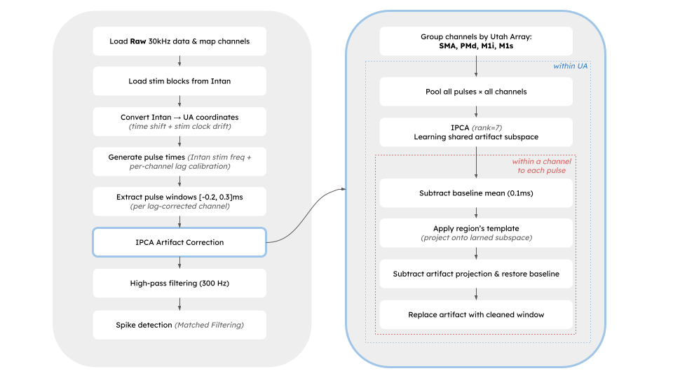

Steps of the pipeline
Preprocessing
Frame correction —
preprocessing_scripts/OCR_frame_correction.pyDeepLabCut 2-camera data alignment —
preprocessing_scripts/align_dlc_two_cams_to_br.pyVOG to Blackrock (BR) alignment —
preprocessing_scripts/align_VOG_to_br.pyNPRW preprocessing and spike detection (matched filter) —
preprocessing_scripts/NPRW_Intan_analysis_mf.pyCompute timeshift between Intan and BR —
preprocessing_scripts/compute_br_to_intan_shifts.pyUA preprocessing and spike detection (subspace) —
preprocessing_scripts/UA_BR_analysis_ssmf.pyAlternatively use
preprocessing_scripts/UA_BR_analysis_mf.pyfor a matched filter.
Create aligned files —
preprocessing_scripts/make_aligned_npz_and_mat.pyOne file per condition, per side.
Output:
data/results/checkpoints/.../aligned_*.npz
Extract peri-stim tensors based on event timing (IR or stim) —
preprocessing_scripts/extract_peri_stim.pyShape: trials × channels × time bins.
Output:
data/results/checkpoints/.../peristim_*.npz
Output kinematic trajectories for manual inspection —
preprocessing_scripts/inspect_kinematics_trajectories.py
Analysis
Kinematics analysis —
preprocessing_scripts/plot_plateau_analysis.pyRerun from
preprocessing_scripts/extract_peri_stim.pyafter curation.
Extract RSA tensors from correlating regions of interest (ROI) —
preprocessing_scripts/RSA_calculation.pyTrial × trial correlation.
ROIs can be set in
config/params.yaml.
Plot peri-stim firing rate plots —
analysis_scripts/plot_complete_shaded_BT.pyGaussian smoother parameters can be set in
config/params.yaml.
Plot peri-stim rasters —
analysis_scripts/plot_peri_stim_raster.py
Artifact correction schematic
